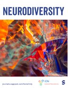
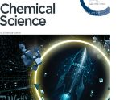
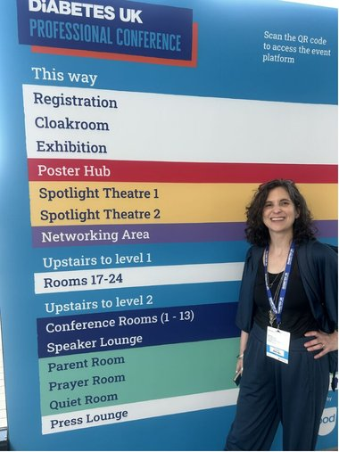

Publications
- Towards a fully inclusive environment for disabled people in STEMM: A NADSN White Paper Brewer, G., Dimitriadi, Y., Doddato, F., Haroon, H., Jolly, J., Leigh, J. S., … & Sarju, J. (2025) (kar.kent.ac.uk/109489)
- 'It's like calling short people vertically challenged': Language and terminology preferences among neurodivergent adults in the United Kingdom. Neurodiversity 4 (2026) (journals.sagepub.com/doi/full/10.1177/27546330261428235)
- 'A Lovely Safe Umbrella to Describe Yourself With' or 'Meaningless': An Online Survey of UK-Based Neurodivergent Adults' Views of Neurodiversity-Related Terminology Grant, A., Leigh, J., Botha, M., Macdonald, S. J., Williams, K., Williams, G., … & Pearson, A. Neurodiversity, 3 (2025) (journals.sagepub.com/doi/10.1177/27546330251390590)
- Being a first generation university graduate, the impact on a career in science. Yacoub, M., Koops, S., Axelithioti, P., Caltagirone, C., Draper, E. R., Haynes, C. J., … & Leigh, J. S. (2025). Chemical Science, 16(23). (2025) (pubs.rsc.org — Being a first generation university graduate)
- stranger than fiction: that lying, conniving, disabled snitch … burn, burn, burn the witch! Bonsall, A., Pickard-Smith, K., Spaeth, E., Alexis-Martin, B., Leigh, J., Ghosts. in Feminist Review (2024) (link)
- Research Culture: Using reflective practice to support PhD students in the biosciences. Tullet, J., Leigh, J., Coke, B., Fisher, D., Haszczyn, J., Houghton, S., Fish, J., Freeman, L., Garcia, I., Penman, S., Hargreaves, E. eLife (2024) (link)
- Listening to fathers in STEM. Leigh, J.S., Smith, D.K., Blight, B.A., Lloyd, G.O., McTernan, C.T., Draper, E.R. Nature Reviews Chemistry (2023) (link)
- Ableism and exclusion: Challenging academic cultural norms in research communication Leigh, J., Caplehorne, Slowe, S. in Journal of Research Management and Administration (2023) (link)
- The future of laboratory teaching must be accessible. Egambaram, O., Hilton, K., Robinson, R., Leigh, J., Sarju, J., Slater, A., Turner, B. in Journal of Chemical Education (2022) (link)
- Autistic women's views and experiences of infant feeding: A systematic review of qualitative evidence. Grant, A., Jones, S., Williams, K., Leigh, J., Brown, A. in Autism (2022) (link)
- Managing research through COVID-19: Lived experiences of supramolecular chemists Leigh, J., Hiscock, J., Koops, S., McConnell, A., Haynes, C., Caltagirone, C., Kieffer, M., Draper, E., Slater, A., Hutchins, K., Watkins, D., Busschaert, N., von Krbek, L., Jolliffe, K., Hardie, M. in Chem (2022) (link)
- Pregnancy in the lab. Slater, A.G., Caltagirone, C., Draper, E.R., Busschaert, N., Hutchins, K.M., Leigh, J.S. in Nature Reviews Chemistry (2022) (link)
- Planning a family. Leigh, J.S., Busschaert, N., Haynes, C.J.E., Hiscock, J.R., Hutchins, K.M., von Krbek, L.K.S., McConnell, A.J., Slater, A.G., Smith, D.K., Draper, E.R. Nature Reviews Chemistry (2022) (link)
- Interdisciplinary research: Researcher experiences in practice based interdisciplinary research Leigh, J., Brown, N. in Research Evaluation (2021) (link)
- Making sense of cultural bumps: supporting international graduate teaching assistants with their teaching Collins, J., Brown, N., Leigh, J. in Innovations in Education and Teaching International, Taylor & Francis (2021) (link)
- An area specific, international community-led approach to understanding and addressing EDI issues within supramolecular chemistry Caltagirone, C., Draper, E., Hardie, M., Haynes, C., Hiscock, J., Jolliffe, K., Kieffer, M., McConnell, A., Leigh, J. in Angewandte Chemie (2021) (link)
- Exploring perceptions of and supporting dyslexia in teachers in higher education Hiscock, J., Leigh, J. in STEM. Innovations in Education and Teaching International (2020) (link)
- Using creative research methods and somatic education to encourage reflection in children Leigh, J. in Journal of Early Childhood Development (2019) (link)
- Exploring multiple identities: An embodied perspective on academic development and higher education research Leigh, J. in Journal of Dance and Somatic Practices (2019) (link)
- Creative and embodied methods to teach reflections and support students' learning Petsilas, P., Leigh, J., Brown, N., Blackburn, C. in Research in Dance Education (2019) (link)
- Making academia more accessible Brown, N., Thompson, P., Leigh, J. in Journal of Perspectives in Applied Academic Practice (2018) (link)
- Imagining Autism: Feasibility of a Drama-Based Intervention on the Social, Communicative and Imaginative behaviour of Children with Autism Beadle-Brown, J., Wilkinson, D., Richardson, L., Shaughnessy, N., Trimingham, M., Leigh, J., Whelton, B. in Autism (2018) (link)
- Where are the disabled and ill academics? Brown, N., Leigh, J. in Disability and Society (2018) [link]
- Managers' views of skilled support Bradshaw, J., Beadle-Brown, J., Richardson, L., Whelton, R., Leigh, J. in Journal of Applied Research in Intellectual Disabilities (2018) (link)
- Experiencing emotion: Children's perceptions, reflections and self-regulation Leigh, J. in Body, Movement, and Dance in Psychotherapy (2017) (link)
- An embodied perspective on judgements of written reflective practice for professional development in Higher Education Leigh, J. in Reflective Practice: International and Multidisciplinary Perspectives (2016) (link)
- Perspectives, tensions and expectations of programmes for academic and professional development Leigh, J. in Journal of Perspectives in Applied Academic Practice (2016) (link)


